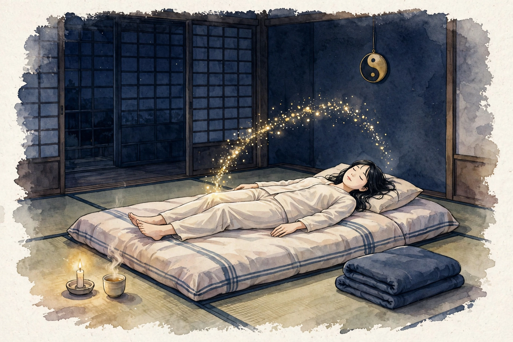

呼吸法の実践（寝る前の数分） ― 眠りに入る前のひとときと、タントラのまなざし
布団に入っても考えごとが巡って目が冴えてしまったり、時計の針を何度も確かめてしまったり、身体は疲れているのに眠りに入るきっかけがつかめなかったり。眠りの入口の感覚は、その日の過ごし方を静かに映すものです。第3回「呼吸法（ブリージング）の基礎」では呼吸の基本の考え方を、第24回「呼吸法の実践」では数え方と姿勢の整え方をご紹介しました。この記事では、その実践を「寝る前の数分」に絞り、布団やベッドの上で横になったまま行える手順として整理します。あわせて、眠りに入りにくい夜に考えられる要因を断定せずに眺める視点、注意点と受診の目安までをご紹介します。

呼吸と眠りの考え方 ― 寝る前の数分を眺める、伝統のものさし
ヨーガや瞑想の伝統では、呼吸は身体と心をつなぐものとして大切にされてきました。呼吸を整える実践は「調気（プラーナーヤーマ）」と呼ばれ、座って行う瞑想の支度として伝えられてきたものが多い一方で、眠りと結びつけて語られる実践も残っています。横たわったまま身体の感覚を順に辿る「ヨーガ・ニドラー」は、「眠りのヨーガ」と訳して紹介されることもある言葉です。語られ方には幅がありますが、眠りに入る前の時間に、呼吸と身体の感覚へ静かに注意を向けるという発想そのものは、古い伝統の中にも見られるものとして伝えられています。
夜と眠りをめぐる文化については第16回「夜と眠り」でも辿りましたが、タントラのまなざしは、活動と休息、陽と陰を、対になるリズムとして眺めます。一日の活動を終え、灯りを落として布団に入るまでの時間は、そのリズムが陽から陰へ渡っていく境目です。寝る前の数分の呼吸は、その境目に置く小さな区切りとして眺めることができます。「眠らなければ」と力を入れる時間ではなく、今日の呼吸はどのあたりにあるのかを静かに確かめる時間です。なお、これは伝統的な語られ方のご紹介であり、この記事が特定の変化や結果をお約束するものではありません。
眠りに入りにくい夜 ― 考えられる要因を、断定せずに整理する
「眠れない」とひと口に言っても、布団に入った直後から目が冴える方もいれば、考えごとが始まってしまう方もいます。日によって違ったり、平日と休日の前とで違ったりすることもあります。ここでは、日常の文脈で結びつけて語られることの多い要素を、断定を避けながら整理します。あくまで一般的な整理であり、ご自身の状態を判断するためのものではありません。
- 考えごとの巡り。一日の出来事や翌日の予定が、静かになった途端に巡り始める方もいます。頭の中の動きと結びつけて眺められることの多い要素です。
- 画面の光と、時刻を確かめる習慣。眠る直前まで画面を見ていた日や、眠れない焦りから時計やスマートフォンを何度も確かめる夜に、余計に目が冴えると感じる方もいます。
- 身体の張りと、一日の疲れ。肩や腰の張り、脚のだるさなど、身体の感覚が気になって寝姿勢が定まらない夜もあります。疲れの強さそのものより、張りの残り方と結びつけて語られることがあります。
- 寝室の環境。明るさ、音、室温や寝具の感触など、環境の要素が眠りの入口に影響すると感じる方もいます。季節によって感じ方が移ろう点も、環境の要素の特徴の一つとされます。
- 昼間の眠りと、夕方の過ごし方。夕方以降の長い昼寝や、夜遅くの食事・入浴の時刻など、一日の後半の過ごし方と結びつけて眺められることがあります。
- 「眠らなければ」という気持ちそのもの。眠れないことへの焦りが、かえって目を冴えさせるという巡り方を感じる方もいます。気持ちの面から眺める視点です。
一方で、眠りにくさの背景に、医療機関での確認が必要な状態が関係している場合もあります。この記事は、身体の状態を判断したり、特定の変化をお約束したりするものではありません。呼吸法は眠りを保証するものではなく、「眠る前の数分に、呼吸へ注意を向ける試み」としてお読みください。判断が必要な場面については、後半の「注意点と受診の目安」も必ずご確認ください。
実践の流れ ― 寝る前の数分、五つのステップ
ここからは、布団やベッドに入ったあと、横になったまま行える流れを五つのステップに整理します。第24回でご紹介した数え方の基本はそのままに、寝る前ならではの点――灯りを落としたあとに行うこと、数える時間を短く区切ること、眠気が来たら途中でやめてよいこと――を加えた形です。姿勢は仰向けでも横向きでも構いません。枕の高さや掛け物の重さは、いつもの眠りの支度のままで大丈夫です。
寝る前の呼吸法 ― 五つのステップ
- 灯りを落とし、姿勢を整える。部屋の灯りを落とし、いつもの寝姿勢を取ります。仰向けの場合は腕を身体の脇にゆるく置き、脚は力を抜いて自然に開きます。横向きが楽な方は、その姿勢のままで構いません。まず身体の重さが布団に預けられていく感覚を、一呼吸だけ眺めます。
- 数えずに、自然な呼吸を眺める。はじめの数呼吸は、整えようとせず、今の呼吸の速さや深さをそのまま眺めます。浅くても速くても、その日の呼吸として受け取るところから始めます。鼻からでも口からでも、楽な方で構いません。
- 吐く息を、少しだけ長くする。落ち着いてきたら、吸う息を4拍、吐く息を6拍ほどの目安で数えます。あくまで目安であり、苦しく感じる場合は拍を短くするか、数えること自体をやめて自然な呼吸に戻してください。「長く吐く」ことよりも、「吐く息に注意が向いている」ことの方が大切です。
- 数を手放し、感覚へ移る。数呼吸つづけたら、今度は数えるのをやめ、呼吸に合わせて身体の感覚を順に辿ります。お腹のふくらみ、胸の動き、布団に触れる背中や脚の重さなど、気づいた場所を一つずつ眺めるつもりで進めます。考えごとが巡り始めたら、責めずに、また吐く息へ注意を戻します。
- 数分で区切り、そのまま眠りへ渡す。全体で3〜5分ほどを目安に、区切りのよいところで実践を終えます。途中で眠気が来たら、その時点でやめて構いません。逆に、数分行っても眠くならない日は、それ以上つづけず一度区切ります。静かに起き上がって灯りを弱くつけ、落ち着いてから改めて布団に戻る方もいます。
- 時間の目安。全体で3〜5分程度から始めるのが無理のない目安です。長く行うほどよいというものではありません。眠りに入る前の実践は、短く区切ること自体が大切な要素です。
- 日常への取り入れ方。歯磨きや湯上がりの支度など、毎晩すでにある流れの最後に結びつける方がいます。眠れたかどうかではなく、「今夜も数分だけ呼吸を眺めた」という事実だけを手帳に一行書き留める方もいます。眠れた夜と眠れなかった夜の違いを比べる材料にするのではなく、続けている区切りとして眺める付き合い方が向いています。
寝る前の呼吸法は、眠るための技術として構えるよりも、一日の終わりに置く小さな区切りとして取り入れる方が、伝統らしい実践の形です。決まりとして抱え込まず、行わない夜があっても構わない、ゆるやかな付き合い方でお試しください。
注意点と受診の目安 ― 無理をしないための線引き
呼吸法は静かな実践ですが、やり方によっては負担になる場合があります。まず、次の注意点を確かめてください。
- 息苦しさやめまいを感じた場合は、すぐに数えることをやめ、自然な呼吸に戻してください。
- 息を無理に止めたり、限界まで長く吐きつづけたりしないでください。拍の目安は、楽に保てる範囲でのみ使います。
- 眠れない日があっても、自分を責めないでください。実践は眠りを約束するものではなく、行ったからといって眠れなければならないものでもありません。
- 体調について通院中・服薬中の方は、事前に医師や専門家へ相談されることをおすすめします。眠りのための薬を服用中の方は、自己判断で量を変えたり中断したりしないでください。
また、次のような様子がある場合は、セルフケアで様子を見るのではなく、医療機関への相談をおすすめします。
- 眠れない、または眠りが浅い日が数週間つづいている
- 日中の強い眠気で、日常生活や仕事に支障が出ている
- 大きないびきや、眠っている間の呼吸の乱れを指摘されたことがある
- 気分の落ち込みや不安を伴っている
- 脚のむずむずする感覚など、身体の感覚のために眠れない
受診先の目安としては、まずはかかりつけ医や、睡眠の相談を受けている医療機関が挙げられます。呼吸法やセルフケアは医療の代わりになるものではありません。伝統的な知識は「眠る前の時間を静かに眺めるきっかけ」として受け取り、判断が必要な場面では専門家の力を借りること。その線引きが、眠りと長く付き合っていくための大切な姿勢です。
サロンのご案内 ― 眠りの支度の先にある、静かな個室の時間
寝る前の小さな実践はご自宅でもできますが、時には日常の場所から離れ、落ち着いた空間でゆっくりと身体を休めたいと感じる方もいます。YinYang-Harmonyは、大阪・梅田の堂山町にあるレンタルサロンACE梅田内で、完全予約制にて施術を行うタントラマッサージ・ヒーリングサロンです。
コースは、90分15,000円（税込）のスタンダードコース、120分20,000円（税込）のディープハーモニーコース、150分25,000円（税込）のプレミアムジャーニーコースの3つで、いずれもカウンセリングとシャワーの時間を含みます。詳しくは料金ページと施術の流れのページをご覧ください。営業時間は10:00〜20:00（完全予約制／不定休）で、ご予約はLINEにて承っています。ご希望の方は「ご予約・お問い合わせ」からご案内をご覧ください。
施術は鍼灸師の国家資格を持ち、施術歴30年のセラピストが担当します。鍼灸師として東洋医学を学んだ立場から、呼吸のリズムに合わせたオイルトリートメントを中心に、静かな個室でお過ごしいただきます。当サロンは心身の調和とリラクゼーションを目的とした健全なヒーリングサロンであり、医療行為や風俗的サービスを目的としたものではありません。日々の小さな実践の先に、誰かの手に委ねる静かな時間を選ぶ方がいらっしゃれば、その受け皿の一つとして当サロンを思い出していただければ幸いです。
↑ コラム目次に戻る